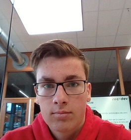
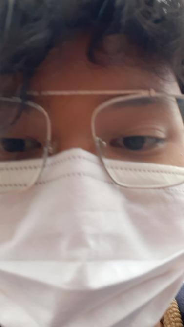
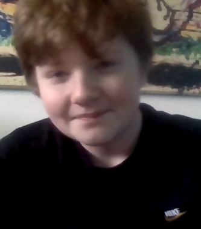

Ik ben Caspar ik ben 16 jaar oud. Ik kom uit 2004. Mijn hobby is gamen. Op school ben ik een student developer op een opleiding. Ik vind dit leuk en leerzaam om te doen. ik werk naast mijn school ook. Ik werk bij New York Pizza. Mijn rol is teamleider. Ik help iedereen wel wanneer ik kan en ik let ook op iedereen op.

James Wagimin
Ik ben James. Ik ben een 17 jarige jonge die in zijn eerste jaar van de opleiding software developer zit. Ik speel games en ik kijk anime en hentai ik ben een weeb. Mijn rol in dit team is technisch consultant. Als de persoon met het minste ervaring probeer ik toch het team niet tegen te houden, maar juist op mijn eigen manier te supporten.

Pjotr de Vos
Ik ben Pjotr. Ik ben een 16 jarige jonge die in zijn eerste jaar van de opleiding software developer zit. Ik speel graag video games en vindt het leuk om anime te kijken, Mijn rool is functioneel consultant. Ik werk graag met mensen samen en als ik om hulp vraag dat die er is maar ik probeer het zelf eerst natuurlijk!
